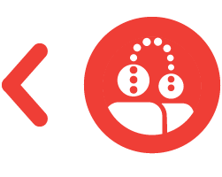

HJEM
OM OS
KONTAKT
FAGLIG VIDEN
JOB & UDDANNELSE
Ungdomsuddannelse
Arbejdsevneafklaring
Eksternt erhvervsforløb
Erhvervs- og Uddannelsesmentor
Særlig specialpedagogisk mentor og coach
Beskyttet beskæftigelse
Sårbare kvinder i job/uddannelse
NETVÆRKSAFDELINGEN
Netværksgrupper
Det siger folk om netværksafdelingen
Søskendehjemmeside - Autizme.dk
BEHANDLING & KURSER
Rådgivning
Behandling af angst og/eller OCD for personer med ASF
Udredning
Kurser
Undervisning
Specialpedagogisk støtte og vejledning
FORSKNING & UDVIKLING
Forsknings- og udviklingsafdelingen
Igangværende forskning
Afsluttet forskning
Nyt fra andre fagfolk

BEHANDLING & KURSER
Rådgivning
Behandling af angst og/eller OCD for personer med ASF
Udredning
Kurser
Kurser/Tilmelding
Undervisning
Socialpædagogisk støtte og vejledning